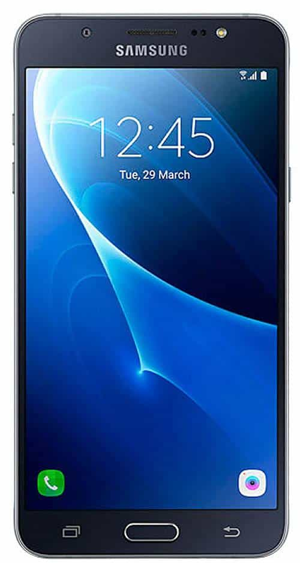
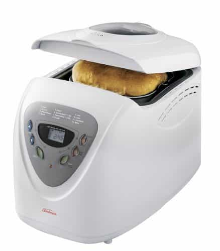
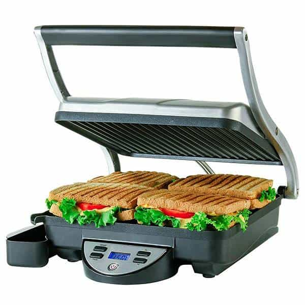
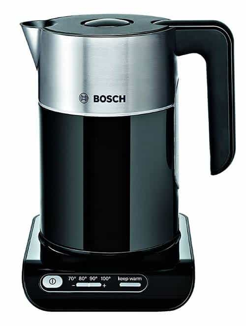
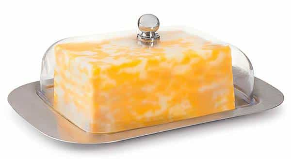
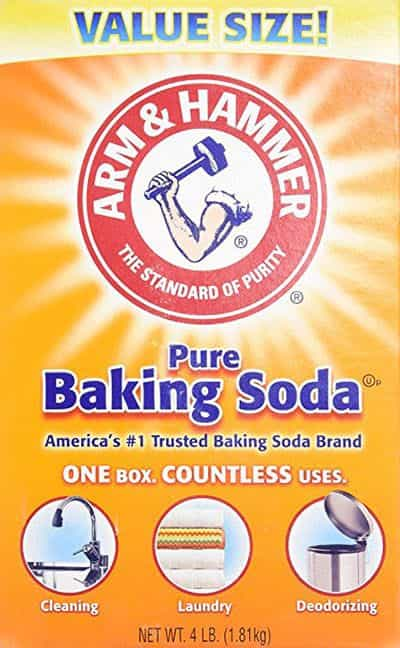
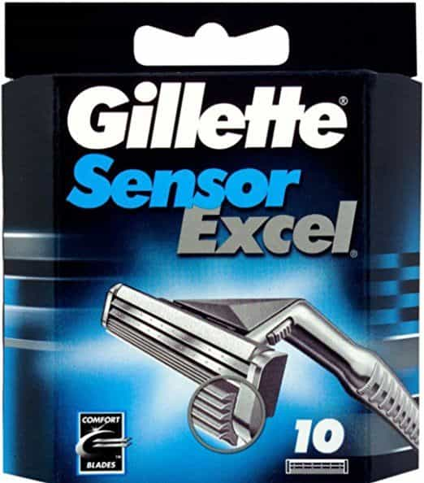

Daryush "Roosh" Valizadeh created ROK in October 2012. You can visit his blog at RooshV.com or follow him on Twitter and Facebook.


I want to share ten products I use every day that make my life a tad more comfortable, productive, or enjoyable.
All my work is produced on this. It’s fast, lightweight, has a long battery life, and reboots in seconds thanks to a solid state hard drive. I would say it’s even too powerful for my main application of writing and browsing the web.
There are a couple of downsides. First, the trackpad is clumsy so I feel compelled to use a wireless mouse. Second, there is a production flaw that creates a noticeable bulge on the left side of the keyboard (I’ve seen two laptops of this model with the problem). This causes impressions of the keys to be left on the screen. Lastly, it has Windows 10. It took me a week of hacking to add features that I used on Windows 7.

The best thing about this phone is that it has dual SIMs and manages to get an H+ data connection (a speed in between 3G and 4G) within any country I visit, unlike non-international phones that may only get 2G. I leave my phone on for twelve hours a day and from that I get four days of use before having to recharge. If I could do it all over again, I’d buy the J5 version that has a smaller screen to make it more convenient to put in my jean pocket.

I’ve been making my own bread for one and a half years. While I don’t make a loaf every day, I do eat my bread daily. The recipe I use calls for a mixture of white and rye flour to get the texture and taste that I prefer, with low amounts of salt and sugar. There are many bakeries near my apartment that has fresh bread, but I get a humble satisfaction from eating my own.

For lunch I take two slices of my bread and make a ham and cheese sandwich with a panini maker. I then top it off with two fried eggs. I don’t know why, but a panini maker significantly enhances the taste of a sandwich when compared to using a normal toaster oven.
While many people get tired of eating the same food every day, my lunch is usually the highlight of my day. No matter where I am in the world, or what troubles I have, my lunch offers me a feeling of stability and comfort.

I had never seen an electric kettle until I left America. Before that, I’d put water into a stove top kettle and wait for the whistle. Or when making pasta, I’d put water in the pot and wait for it to boil. Europe has rid me of these barbaric practices.
My electric kettle can heat a cup of water in less than a minute. When cooking pasta, I boil the water in the kettle first to save time. Whenever I go back to the States and see my mother using a stove top kettle, I cry for her on the inside. I bought her an electric kettle, but she’s too old to change her ways.
What I love about this kettle is that it can heat water at temperatures below 100 degrees. This is perfect for green and white teas that should not be used with boiling water.
Click here to view on Amazon UK.

For most of my life, I was content with taking a stick of butter from the refrigerator, unwrapping the plastic, cutting off a pat, re-applying the wrapper, and then putting it back into the refrigerator. This is acceptable in America where a stick of butter is small, but in Europe the butter doesn’t come in sticks but huge rectangle bricks.
European butter bricks take so long to finish that the wrapper becomes a greasy mess after just a few uses. After shopping around three stores in my area, I found a butter tray with a metal base and clear plastic top. It’s now such a pleasure to use butter in my cooking.
I have severe sleep problems. First, my body clock seems to be based on a 25-hour day, which means that if I solely listen to it on when to sleep and wake, I will soon go to bed in the morning and wake up at night. More severely, I am an exceedingly light sleeper—far lighter than a cat—even though I can fall asleep quickly. (One benefit of being a light sleeper is that no girl has successfully robbed me.)
In Europe I live in a shabbily constructed apartment building where I can easily hear my neighbors. In fact, I can hear them talking right now as I type the draft of this article. So they don’t wake me up at 8am, I put on brown noise from SimplyNoise every single night before going to bed. The noise is loud enough to mask my neighbors, but it doesn’t interfere with my sleep.
Girl included
I don’t like the light, especially since I prefer to wake up at noon or after. I sleep with a cheap nightmask that I buy in packs of ten. Each one lasts about two months. With my white noise and nightmask, I have to debrief women who sleep over that the experience will be a bit different from the hundreds of other men they’ve been with.

Seven years ago I discovered how baking soda acts as a strong deodorant. I still use it every day after showering by applying a fingertip worth onto my armpits. A $1 package lasts me two years. For many men, baking soda was the first red pill they took.

I like having only two razors because it’s easier to maneuver around my face. Two razors is like a sports car while three razors or more is like a family minivan. I don’t have a corporate job so I don’t need a close shave to appease anyone. Unfortunately, in the past few years it has become impossible to find these razors in a normal store, so I usually order them in bulk online at a premium markup.
There are many other things I use regularly, such as a lint roller and Amazon Kindle, but not daily like the items above. As you can see, I have a simple life, and I hope I can keep it that way.
This article was originally published on Roosh V.
Read Next: 10 Books That Every Man Should Read